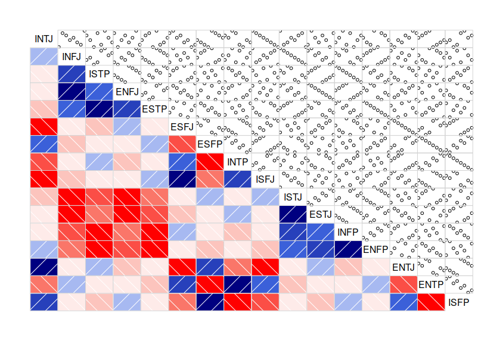

| Extroversion | Introversion | |
| Sensing | Intuition | |
| Thinking | Feeling | |
| Judging | Perception |
Tired of playing? The image below shows how similar is the order of the cognitive functions between the different MBTI types. Blue is a positive correlation, red is a negative one. The darker, the stronger.
For example, INTJ and ENTJ are closely related whereas INTP and ISFP are complete opposites.
I wrote this to study the MBTI, it is neither an endorsement nor a rejection of the model. Draw your own conclusions... and let me know what you think!